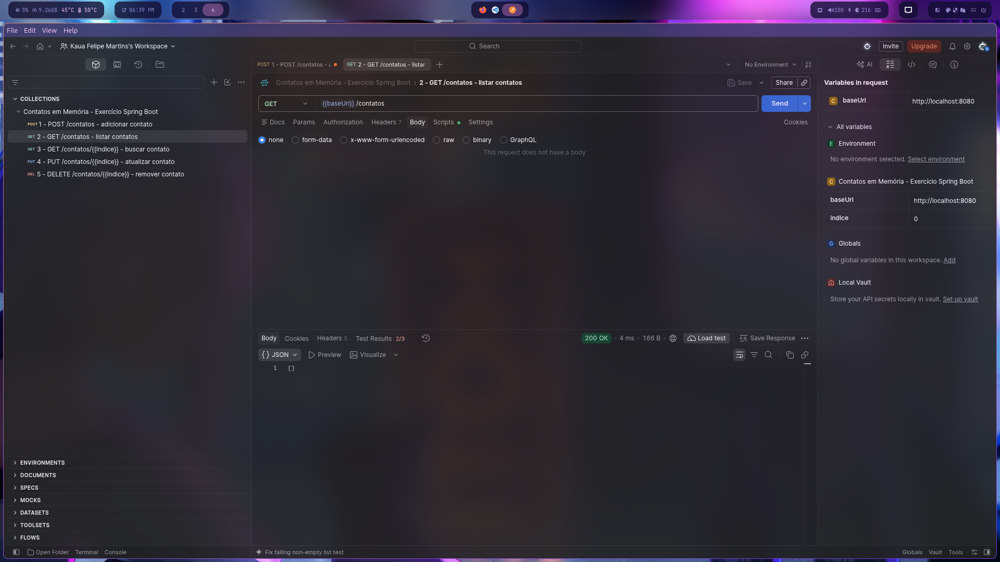
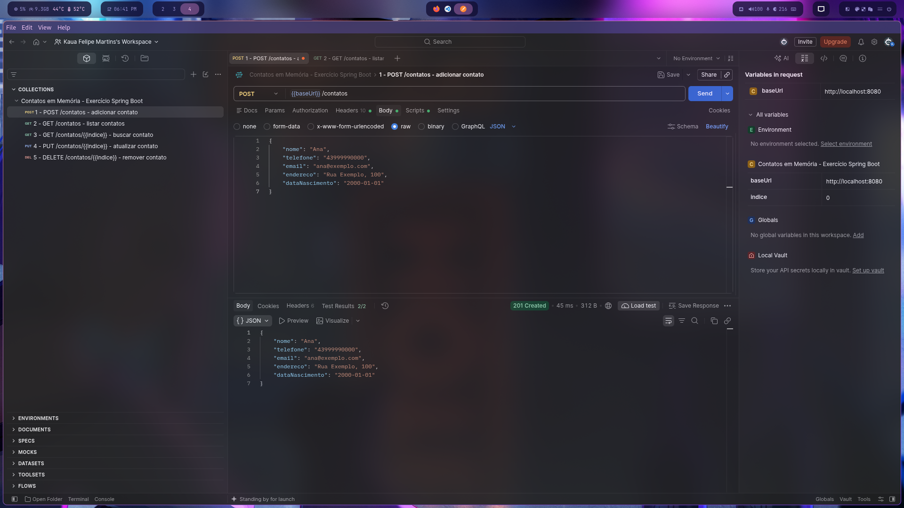

Documentação de Testes - API Contatos em Memória
Sequência de requisições e validação dos endpoints (Spring Boot)
GET
1. Listar Contatos Inicial (get-list)
Consulta inicial à coleção de contatos demonstrando a lista vazia [].

POST
2. Adicionar Primeiro Contato (post-1)
Criação do primeiro registro no sistema (Contato: Ana).
